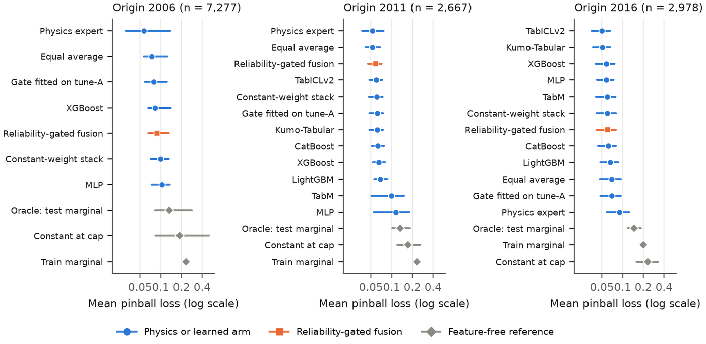
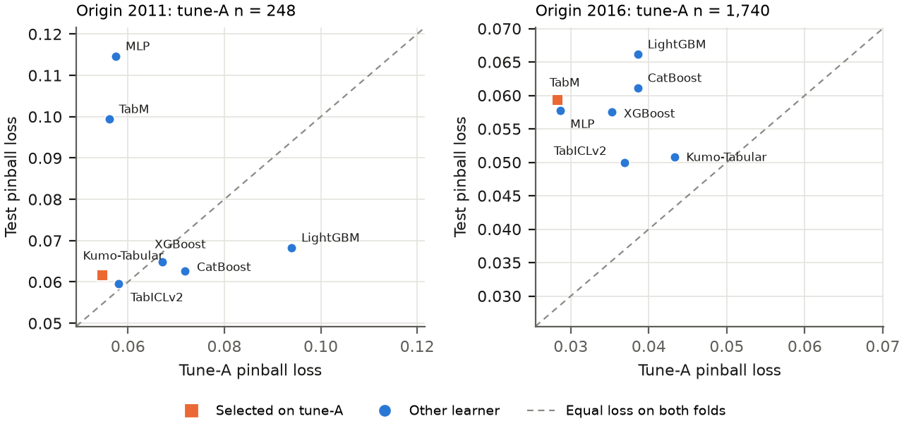
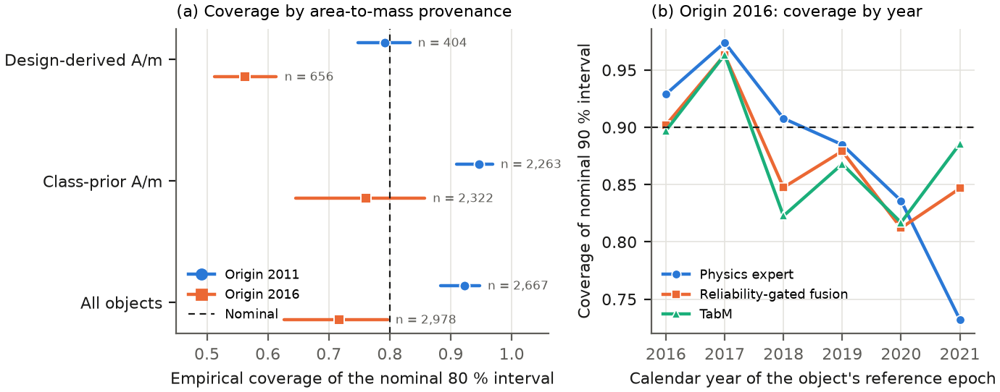
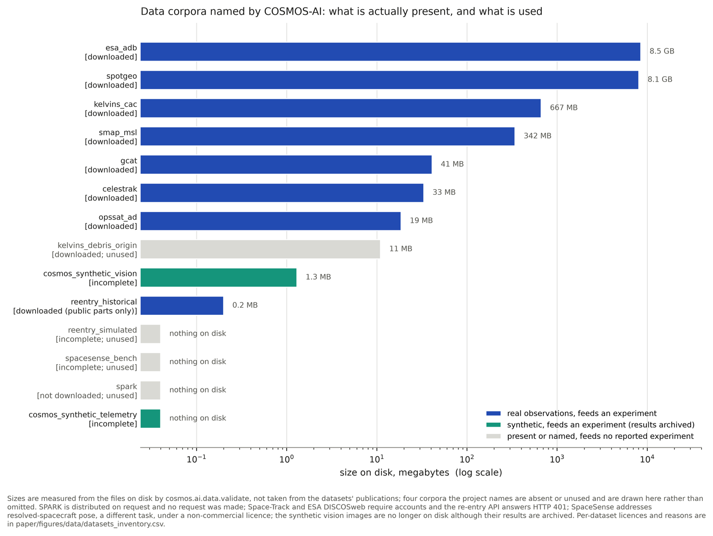

Reports, diagrams
and the audit trail
Everything below lives in the public repository. Paths are relative to the repository root; follow a card to read the file on GitHub.
Start here
Project README
What the framework is, how to install it, the dataset inventory and what is deliberately not redistributed.
Dataflow and metrics
Every pipeline stage and the metric definitions behind each reported number.
Architecture and novelty
The module graph, and a careful statement of which parts are new and which are existing methods used as published.
Results and analysis
The full result set with intervals, subgroup breakdowns and the negative findings.
Limitations register
Nineteen known limitations, each with its cause, its effect and how the system handles it downstream.
Reproducibility report
What reproduces at the prediction level, what does not reproduce at the training level, and exactly why.
Dataset provenance
Source, licence, snapshot date and status for every dataset, including the ones that are absent.
Data hosting & Git LFS
Which datasets travel with the repository, which must be downloaded, and the commands to fetch them.
Figures generated from the code





Written outputs
| Output | State | Availability |
|---|---|---|
M.Tech thesis, 257 pages, Amrita ugthesis format |
Written | Held with the author and the department; the source is not published in this repository |
| Journal manuscript, Springer format, targeted at the Journal of Intelligent & Robotic Systems | Draft | Not submitted. Not published in this repository |
| Benchmark release plan and claims matrix | In repository | docs/jirs/ |
| Audit and acceptance reports | In repository | docs/research/ |